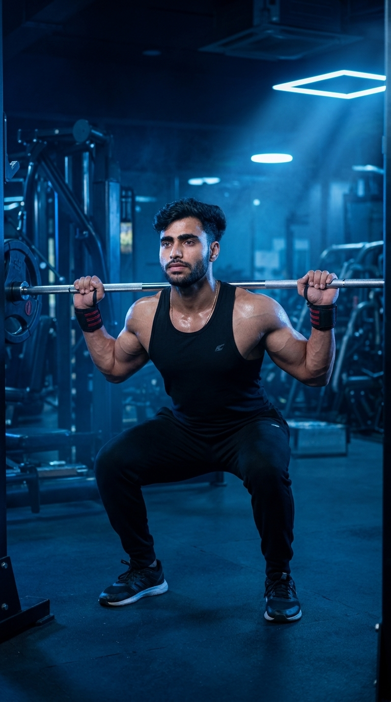

Primary Muscle
Quadriceps
Build Powerful Legs, Strong Glutes, and Total-Body Strength
The Barbell Back Squat is one of the most effective compound exercises for building lower-body strength, muscle mass, and athletic performance. By simultaneously engaging the quadriceps, glutes, hamstrings, and core, this foundational movement improves functional strength, balance, stability, and overall power. Whether your goal is muscle growth, strength, or sports performance, the Barbell Back Squat deserves a place in nearly every training program.

Quadriceps
Barbell & Squat Rack
Intermediate
Compound
Discover which muscles drive the Barbell Back Squat and how the supporting muscle groups work together to produce maximum lower-body strength, stability, balance, and efficient movement throughout every repetition.
Rectus Femoris & Vastus Muscles
Hip Extension & Power
Knee & Hip Stability
Spinal & Torso Stability
Discover how the Barbell Back Squat builds lower-body strength, increases muscle mass, improves athletic performance, enhances functional movement, and develops total-body stability through one of the most effective compound exercises.
The Barbell Back Squat develops powerful quadriceps, glutes, and hamstrings, making it one of the most effective exercises for increasing overall lower-body strength.
Training with progressive overload stimulates muscle hypertrophy across the legs and glutes, helping build size, strength, and balanced lower-body development.
Stronger legs translate to greater power for sprinting, jumping, lifting, and many sports that rely on explosive lower-body movements.
Your core and lower back work continuously to keep the spine stable, improving posture, balance, and full-body control during heavy lifts.
Squatting strengthens the movement patterns used in everyday activities like sitting, standing, lifting, climbing stairs, and carrying heavy objects safely.
Because multiple muscle groups work together, the Barbell Back Squat improves overall strength and supports better performance in many other compound exercises.
Follow these step-by-step instructions to perform the Barbell Back Squat with proper technique, full range of motion, and optimal body alignment to maximize lower-body strength while reducing the risk of injury.
Position the barbell across your upper traps, grip it slightly wider than shoulder-width, and step back from the rack with your feet about shoulder-width apart and toes pointed slightly outward.
Keep your chest up, brace your core, and maintain a neutral spine before beginning the descent.
Push your hips back and bend your knees at the same time, lowering your body until your thighs are at least parallel to the floor while keeping your heels planted.
Allow your knees to track naturally over your toes instead of collapsing inward.
Descend until your hip crease is level with or slightly below your knees while maintaining a neutral spine and balanced posture.
Only squat as deep as your mobility allows while maintaining proper form.
Push through your entire foot, extend your hips and knees together, and stand back up until you reach the starting position without locking your knees aggressively.
Think about driving the floor away with your feet instead of simply lifting the bar.
Re-establish your breathing and brace before each repetition, maintaining consistent form from the first rep to the last.
Prioritize perfect technique over heavier weights to build strength safely and consistently.
Avoid these common technique mistakes to maximize lower-body strength, improve squat performance, and perform the Barbell Back Squat safely and effectively.
Allowing your knees to cave inward reduces force production, places unnecessary stress on the joints, and increases the risk of injury.
Keep your knees tracking in line with your toes throughout the entire movement while pushing them slightly outward.
Losing a neutral spine during the squat places excessive stress on the lumbar spine and reduces lifting efficiency.
Brace your core, keep your chest lifted, and maintain a neutral spine from start to finish.
Partial repetitions reduce muscle activation and limit strength and muscle development through the full range of motion.
Lower until your thighs are at least parallel to the floor or as deep as your mobility safely allows.
Loading the bar too heavily often leads to poor technique, reduced depth, and an increased risk of injury.
Master proper squat mechanics first, then increase the weight gradually while maintaining excellent form.
Apply these expert coaching cues to improve your Barbell Back Squat technique, increase lower-body strength, and perform every repetition with maximum power, stability, and confidence.
Take a deep breath and tighten your core before descending to create a stable torso and protect your spine throughout the lift.
A strong brace is the foundation of every safe and powerful squat.
Maintain an upright chest and neutral spine as you squat to improve balance and prevent unnecessary stress on your lower back.
Think "chest up" throughout the entire movement.
Push evenly through your heels, midfoot, and the balls of your feet to generate maximum force while maintaining balance.
Keep your feet firmly planted from start to finish.
Master proper squat mechanics before increasing the load. Consistent technique leads to greater strength gains and significantly lowers injury risk.
Perfect form always beats heavier weight with poor technique.
Progress from mastering proper Barbell Back Squat technique to lifting heavier loads while maintaining excellent form, full range of motion, and maximum lower-body strength.
Learn proper squat mechanics using your body weight before introducing external resistance. Focus on balance, posture, and full-depth repetitions.
Squat depth, balance, mobility, and core stability.
Practice with a light barbell while maintaining a neutral spine, controlled descent, and proper knee tracking on every repetition.
Bracing, movement control, and consistent technique.
Progressively add weight while maintaining full squat depth, proper alignment, and complete control throughout each repetition.
Progressive overload, strength gains, and flawless squat mechanics.
Continue progressing with heavier loads or advanced squat variations while preserving excellent technique, full mobility, and safe lifting habits.
Maximum strength, power production, and long-term progression.
Find answers to common questions about Barbell Back Squat technique, muscles worked, proper form, squat depth, training frequency, and how to build stronger legs safely and effectively.
Barbell Back Squats primarily target the quadriceps, glutes, and hamstrings while the core, lower back, calves, and hip muscles stabilize the movement.
Aim to lower until your thighs are at least parallel to the floor. If your mobility allows, squatting below parallel with proper form can further increase muscle activation.
Yes. Depending on your body proportions and squat style, your knees may naturally travel past your toes. The important point is that they stay aligned with your toes and do not collapse inward.
Yes. Beginners should first master bodyweight and light barbell squats before gradually increasing the load while maintaining proper technique.
For muscle growth, perform 3–4 sets of 6–12 repetitions. For maximum strength, use heavier weights for 3–6 repetitions while maintaining proper technique.
Most people benefit from performing Barbell Back Squats one to three times per week, depending on their training program, recovery, and overall fitness goals.
Explore other leg exercises that complement the Barbell Back Squat and help you build stronger quadriceps, hamstrings, glutes, and calves through a combination of compound and isolation movements.


Continue building stronger legs with step-by-step exercise guides covering proper technique, muscles worked, common mistakes, expert coaching tips, and progression strategies for every fitness level.